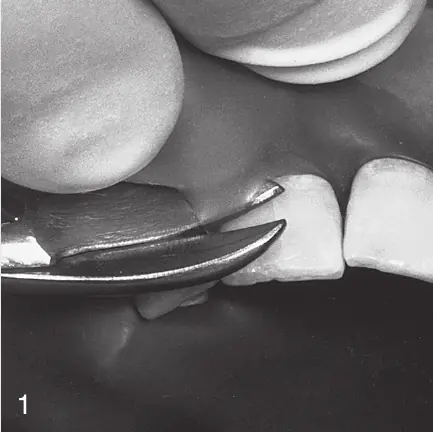
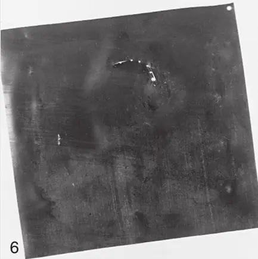

نسخه استخراجشده؛ ترجمه یا تأیید علمی انجام نشده است. وضعیت: captured
ترمیم آمالگام کلاس II مولر اول پایین تمام شده است. دانشجو کلمپ را با فورسپس برمیدارد و ورق را یکجا بیرون میکشد. ورق در تماسها گیر میکند، لثهی بیندندانی کشیده میشود و خردههای آمالگام روی زبان بیمار میریزد. کدام گامها جا افتاد؟

برداشتن رابردم هم ترتیب دارد. پیش از هر کاری، میدان را با آب بشوی و خردهها را با HVE بکش تا هنگام برداشتن ورق به کف دهان نریزند. اگر ساکشن بزاق گذاشتهای، همین حالا بیرونش بیاور.
در کودک، بسیاری پس از بریدن سپتومها کلمپ، فریم و ورق را یکجا با فورسپس برمیدارند.
قیچی باید تیز باشد؛ قیچی کُند ورق را بهسختی میبُرد و کار را کند میکند. بسیاری قیچی نوکگرد را ترجیح میدهند، و قیچی نوکخمیده خطر بریدن بافت نرم را کمتر میکند.

اشتباه رایج: وارسی نکردن ورق چون «چیزی دیده نمیشود». تکهی کوچکی که میان دندانها یا زیر لثه بماند، التهاب لثه، آبسهی لثه و حتی از دست رفتن اتصال پریودنتال میدهد.